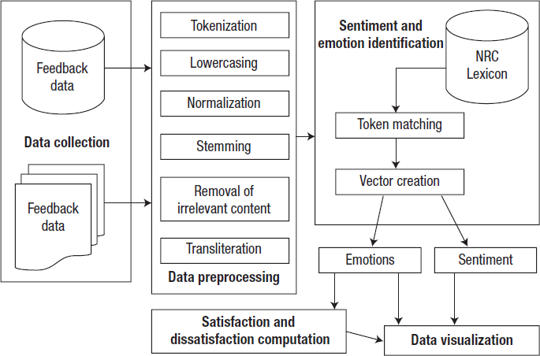
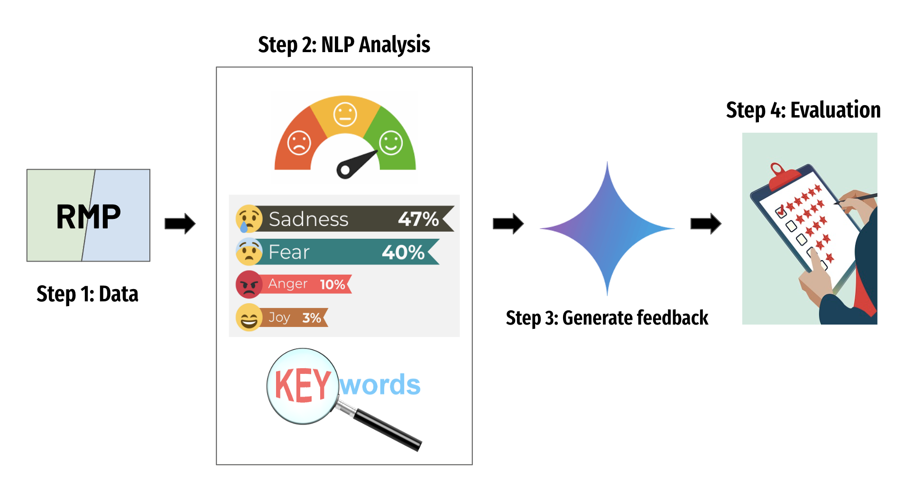
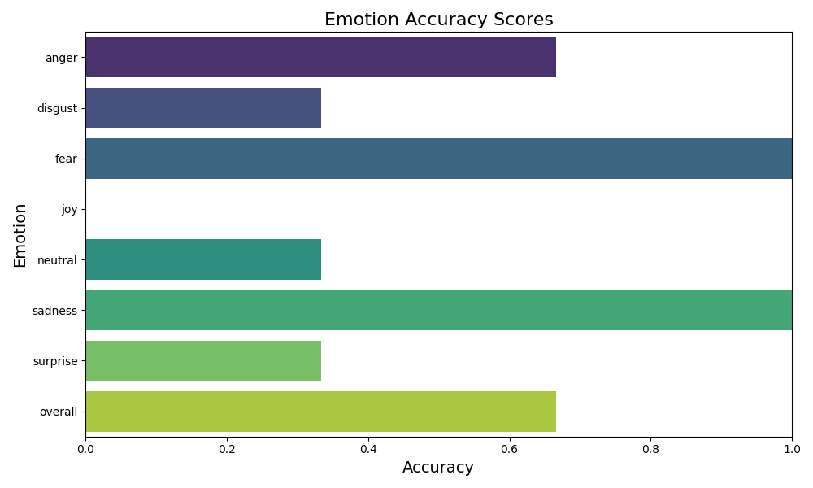
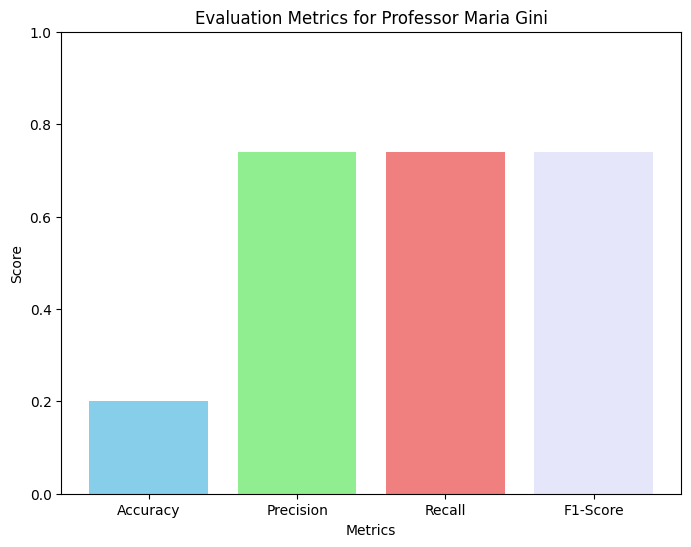

This project seeks to improve the analysis of student feedback in courses at the University of Minnesota, focusing on popular Computer Science classes to start. Teaching quality significantly impacts student learning and by gathering data from surveys and augmenting it with sentiment-based public reviews, we aim to uncover actionable insights through advanced NLP techniques. Using models like BERT, DistilBERT, and RoBERTa, we will perform sentiment analysis and apply clustering techniques to capture common themes in the feedback given. Our goal is to identify critical factors beyond course content that influence student satisfaction and engagement, ultimately offering data-driven recommendations to enhance teaching practices and course design.
A figure that conveys the main idea behind the project or the main application being addressed. This figure is from A Sentiment Analysis System to Improve Teaching and Learning.

This figure, taken from the paper written by Sujata Rani and Parteek Kumar (which was the initial inspiration behind the project), shows the basic process that we plan on using. Although our feedback data will come from different sources and our results will be presented differently, this is the underlying structure of the project.
What did you try to do? What problem did you try to solve? Articulate your objectives using absolutely no jargon.
We wanted to come up with a way to better utilize and analyze student feedback. NLP in educational contexts is seriously lacking. Based on a lot of the initial research that we did, we realized that this was a field where there wasn't a lot being done. We wanted to focus on increasing student engagement in classes because this is a topic where NLP can be really useful, but it's not really being explored. Initially, we were thinking of focusing on online learning, but realized that this required using visualization techniques and not NLP techniques. This is why we decided to use actual student feedback data and implement a sentiment analysis instead. This way, we could really analyze how students were feeling in a class and what was working or not working in that class. There's also a lot of data for this topic, we can look at RateMyProfessor and the UMN SRS data, but it felt like the data wasn't being effectively used. The overall objective is to provide actionable feedback to professors to help them improve their courses or teaching style. We want to go a little bit beyond just doing the sentiment analysis. We want to use the sentiment analysis to create a statement/paragraph and identify key points where professors can improve.
How is it done today, and what are the limits of current practice?
Based on many of the papers that we read when doing our initial research and literature review, this is not something that hasn't been attempted before, but we will be approaching the problem in a different way. One of the paper that we read implemented sentiment analysis, but used traditional machine learning algorithms instead of pre-trained models like BERT, which is what we are proposing for our project. Using traditional machine learning algorithms limits the capabilities of the model. Using specific sentiment analysis models will make the model much easier to finetune and improve. The BERT models will allow the model to understand the context of the review rather than analyze words literally. Current processes also rarely go beyond the actual sentiment analysis section of the project. They come up with graphs that present feedback very generally, but they don't seem to really dive into the potential use cases of the sentiment analysis for education. We want to take it a step further and talk to professors to understand how the tool could actually help them make more tangible impacts/changes in their teaching.
Who cares? If you are successful, what difference will it make?
If the project is successful, the biggest difference will be for educators. As we mentioned, the point of the project is not just to do the sentiment analysis, but to provide an actual tool that professors can use to improve their teaching. This comes in a variety of ways, using graphs, word clouds, and model-generated feedback which can condense the larger text into key points to analyze the main areas of improvement (or what a professor is doing well and should continue to do). Although we're starting with CS professors, we're hoping that this tool can be implemented throughout various departments. Right now, there are a lot of forms of professor feedback, including SRS data, RateMyProfessor, and even personal surveys that the professors themselves send out. The different platforms can be overwhelming. A single professor can have multiple classes with hundreds of students and understanding exactly what they can improve on can be difficult to identify. By implementing this sentiment analysis model, we're hoping to condense the data down so that the instructors receive actionable items rather than pages of text that may be difficult to sort through on their own. Really it's a tool that they can use. Since we'll be talking to instructors to understand what would be most useful to them, the tool will be curated for them specifically rather than be a general sentiment analysis model.
Our project aims to address the challenges of analyzing large volumes of nuanced student feedback to derive actionable insights. Below, we outline the key steps in our methodology and highlight the tools and techniques employed at each stage.
Step 1: Data Collection. We utilized a web scraper to extract student feedback from RateMyProfessors (RMP), focusing on Computer Science professors at the University of Minnesota. The dataset included numerical ratings and open-ended textual comments. However, the RMP data has limitations, including potential bias from a self-selected student pool and a lack of representativeness. Initially, our approach was designed for the SRT data collected by the University, but privacy policies restricted access.
Step 2: NLP Analysis. We employed VADER Sentiment Analysis to classify comments as positive, neutral, or negative, establishing a baseline for understanding feedback tone. To capture nuanced emotional expressions, we used a pre-trained DistilRoBERTa model to classify emotions such as joy, anger, fear, and surprise. Additionally, we leveraged NLTK and Gensim tools to extract key phrases and identify recurring tags for each professor. This highlighted themes such as "clear grading criteria," "engaging lectures," and "challenging coursework," providing granular insights.
Step 3: Feedback Summarization. Processed data was used to prompt the Google Gemini model to generate structured feedback summaries and actionable recommendations for instructors. This step transformed raw analysis into practical guidance.
Step 4: Evaluation. Human evaluations compared model-generated outputs against manually curated benchmarks. Accuracy, precision, recall, and F1 scores were computed to validate sentiment and keyword analyses. Qualitative assessments of Gemini’s feedback summaries ensured relevance and quality.
What did you do exactly? How did you solve the problem? Why did you think it would be successful? Is anything new in your approach?
We addressed the challenge of analyzing large volumes of nuanced student feedback by extracting data from RateMyProfessors using a web scraper. Our NLP pipeline included VADER for sentiment analysis, DistilRoBERTa for emotion classification, and NLTK/Gensim for keyword extraction. This combination allowed us to identify key themes such as "clear grading criteria" and "engaging lectures" while generating actionable feedback through the Google Gemini model. Although our approach is not technically novel, its application in academia to improve teaching quality and student engagement is a meaningful initiative.
What problems did you anticipate? What problems did you encounter? Did the very first thing you tried work?
One major anticipated challenge was data access. The ideal dataset, the University’s SRT feedback, was unavailable due to privacy policies. As an alternative, we used RMP data, which, while useful, has limitations such as potential bias and a smaller student pool. We also faced challenges in designing effective prompts for Gemini and ensuring the outputs aligned with practical instructor needs. Despite these challenges, our iterative adjustments to the pipeline and evaluation processes helped achieve the desired results.
Progress
We decided to slightly update our project so that we're not only focusing on introductory CS courses. In our initial project, we mentioned focusing on these base-level courses to improve them, but the overall goal of the project is to be able to use it on any class/professor to provide useful and actionable feedback, so we decided to start with classes that we're in. This will help us build the model, whoch can then be adapted for all kinds of courses.
Mentor Comments and Evaluations
In our call, Shirley suggested that we incorporate the professors' perspectives into our project by conducting interviews with CSCI faculty. These conversations would allow us to understand what type of feedback professors find most helpful and what specific insights would be most actionable for them in enhancing teaching and learning. Additionally, Shirley recommended that we expand our analysis to include more nuanced emotional analysis within the student feedback. This would help achieve our initial goal to extract deeper insights that go beyond basic feedback, providing actionable recommendations that align more closely with professors' needs and expectations.
Thus, our next steps will be to initiate interviews with some of the CSCI professors to gather their insights on the types of feedback that would be most useful for them. We plan to ask specific questions aimed at identifying actionable feedback that could enhance their teaching practices and improve student engagement. For the emotional analysis, we intend to use advanced NLP tools like VADER and TextBlob for sentiment analysis, along with transformer models such as BERT or RoBERTa to capture more nuanced emotional tones in the feedback. Additionally, we aim to generate a condensed paragraph that integrates and synthesizes data from Rate My Professor (RMP) and the Student Rating of Teaching (SRT) system, providing professors with a focused summary that highlights key insights. To achieve this, we plan to explore text summarization models available on Hugging Face, which can effectively condense large volumes of feedback into concise, meaningful summaries. By combining these tools, we hope to provide a rich, layered understanding of student sentiments, translating them into actionable insights that professors can learn from.
Questions
Plan for the Future
Step 1: Complete Data Collection, Cleaning & Initial Processing (Done by: Nov. 11): We will clean and standardize the data to ensure it is ready for analysis. This includes aligning data formats for class name, professor, and feedback entries across platforms like SRS and RMP. Additionally, we plan to start conducting interviews with CSCI professors to understand their feedback preferences and identify the most useful insights they would like to gain from student feedback. These insights will guide the development of our web application.
Step 2: Develop Sentiment Analysis Model, Implement NLP Techniques, and Generate Summarized Feedback (Done by: Nov. 20): We will use advanced NLP models such as pre-trained BERT and Transformer models from Hugging Face to create a robust sentiment analysis model. This model will capture nuanced emotional tones within student feedback. Additionally, we aim to generate a concise paragraph for each professor through text-generaiton techniques in NLP, synthesizing data from RMP and SRS. This paragraph will highlight areas where professors are excelling and areas that may need improvement, based on common themes in the feedback. Clustering techniques will further help group feedback by specific topics, making the summary more focused and actionable.
Step 3: Visualize Data and Build a Web Application (Done by: Nov. 27): Once the sentiment analysis model and clustering are finalized, we will focus on visualizing the results through graphical representations like graphs and word clouds. The web application will integrate these visualizations, allowing professors to explore feedback trends over time. As part of the development, we will share early versions of the visualizations with CSCI professors and incorporate their feedback to ensure the application meets their needs and provides actionable insights.
Step 4: Final Poster & Project Report (Done by: Dec. 3 & Dec. 12): Our goal is to complete the analysis and web application development by Thanksgiving break. We will then use the break to prepare the poster and start the project report. After our final presentation, we will incorporate any additional insights into the report before submission.
How did you measure success? What experiments were used? What were the results, both quantitative and qualitative? Did you succeed? Did you fail? Why?
We measured success by evaluating the accuracy of our models and the utility of the insights they provided. For sentiment and emotion analysis, we compared model predictions against human evaluations for three professors, focusing on emotions like joy, fear, and anger. We calculated accuracy by matching human-labeled emotions with model-generated ones, achieving a 66% accuracy rate overall. While this was below the common benchmark of 70%, we viewed it as a relative success due to the exploratory nature of our project and the small evaluation sample.

For keyword analysis, we used RateMyProfessors tags as a baseline, calculating metrics like precision, recall, and F1 score. Results showed strong precision and recall (around 74%) but low accuracy (20%), likely because our model generated more nuanced tags than those available on RateMyProfessors. To assess the Gemini-generated feedback, we conducted a qualitative evaluation, ensuring its readability and alignment with the extracted insights. Professors found the feedback understandable and actionable, meeting our usability goals.

Overall, the project succeeded in demonstrating how specialized NLP models can generate meaningful insights, though challenges like classifying joy and low sample sizes highlighted areas for improvement. Future work could refine evaluation methods and expand datasets to address these limitations.
How easily are your results able to be reproduced by others?
Our methodology is highly replicable due to the use of well-documented, widely available tools such as VADER, DistilRoBERTa, and NLTK. Detailed descriptions of our data preprocessing, analysis, and evaluation steps ensure that others can follow our approach with similar datasets. However, access to reliable and unbiased datasets, such as institutional feedback data, remains a critical requirement for reproducing our results.
Did your dataset or annotation affect other people's choice of research or development projects to undertake?
This question is not as revelant to our project since we don't provide the community with any new data. However, by demonstrating the potential of publicly available data for actionable insights, our work highlights the need for more accessible and comprehensive datasets. This could inspire other researchers to advocate for institutional data-sharing practices or explore creative ways to leverage publicly available data. Our project also emphasizes the importance of incorporating sentiment and emotion analyses in feedback systems, which could influence future research directions in education and beyond.
Does your work have potential harm or risk to our society? What kinds? If so, how can you address them?
While our project aims to enhance educational outcomes, it raises ethical concerns, including potential bias in publicly available data and privacy issues for the professors related to feedback. To mitigate these risks, we tried to employ techniques to reduce bias in analysis and highlighted the need for representative datasets. However, we adhere to the guidelines that were adhered by the RateMyProfessor site and try our best to reduce bias in our analysis. Beyond this, we don't believe there's any other ethical concerns for our project.
What limitations does your model have? How can you extend your work for future research?
The primary limitation is the reliance on RateMyProfessors data, which lacks the depth and representativeness of institution-collected datasets. We really hoped to gain access to the SRT data from the University, but weren't able to aquire it. Future work should focus on collaborating with academic institutions to access SRT data while addressing privacy concerns. Additionally, incorporating more contextual factors, such as course difficulty (in reality instead of from student feedback) and class size, could improve the accuracy of our analyses. Expanding the scope of the web application to include dynamic updates and enhanced usability features would also increase its practical value. Finally, validating our approach across diverse educational contexts would strengthen its generalizability.
In this project, we set out to bridge the gap between student feedback and actionable insights using advanced NLP techniques. By employing sentiment and emotion analysis alongside keyword extraction, we aimed to provide instructors with a deeper understanding of student needs, helping to improve teaching practices and learning experiences. Despite challenges such as limited access to institutional datasets and potential biases in publicly available data, our approach demonstrated the potential of leveraging tools like VADER, DistilRoBERTa, and Google Gemini for impactful feedback analysis. We are grateful for the opportunity to explore this meaningful intersection of NLP and education, and for the support of our instructors and peers who provided invaluable guidance. Our work emphasizes the importance of applying technological advancements to enhance education, showcasing how data-driven insights can elevate classroom experiences. While this project marks a significant step forward, it also opens doors for future exploration and improvement. We hope our efforts inspire further research and innovation in making education more responsive, inclusive, and effective.